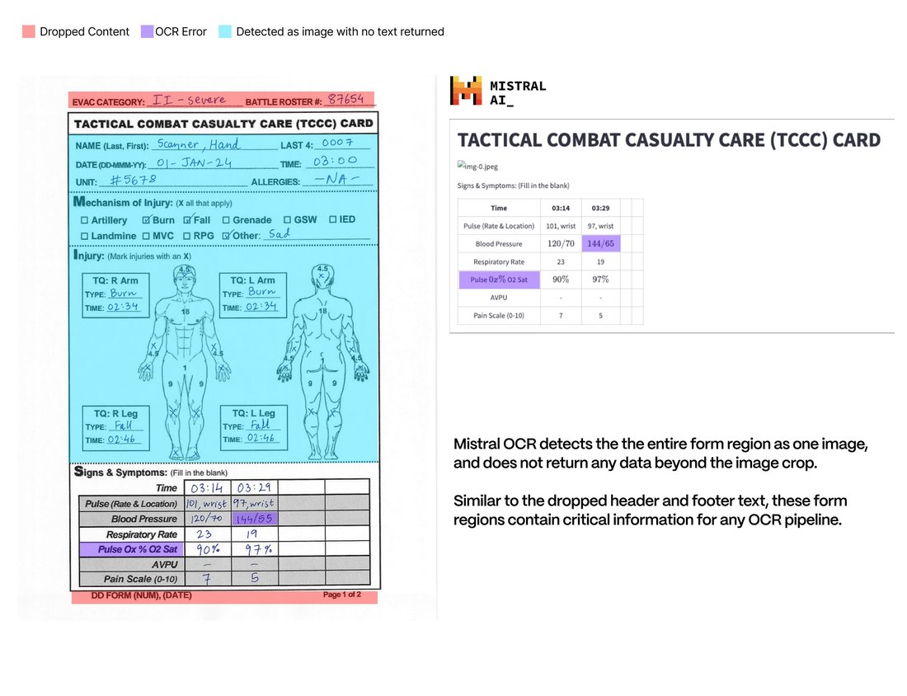

I want nothing more than for PDF parsing to be solved, but this model does not do it.
We benchmarked Mistral OCR against Gemini Flash 2.0, and found worse performance in almost every case.
🧵 https://t.co/zbya4Vzhbm
We benchmarked Mistral OCR against Gemini Flash 2.0, and found worse performance in almost every case.
🧵 https://t.co/zbya4Vzhbm
